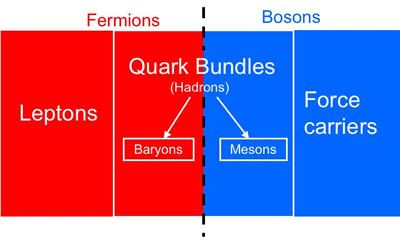

The constituents of the Universe are classified according to the principles of the standard model of elementary particles. This model identifies baryons as matter composed of triplets of fundamental particles called quarks.
The standard model of particle physics recognises two types of elementary particle, differentiated by the quantum mechanical notion of spin. These particles play fundamentally different roles in nature, and can only have values of spin that are integers (0, 1, 2,…) or half-integers (1/2, 3/2, 5/2,…). Particles that carry the forces of nature are integer spin bosons, while half-integer spin fermions make up the matter on which these force act.

Fermions are classified into two families:
- Quarks which experience the strong force. This causes quarks to never occur as solitary particles in nature. They are always found in ‘bundles’ of 2 (mesons) or 3 (baryons). Collectively, these quark bundles are referred to as hadrons.
- Leptons which do not experience the strong force.
Baryons contain 3 quarks. There are many different baryons observed in particle accelerators (e.g. Λ0, Σ+, Σ–, Σ0, Δ+, Δ–, Δ0, ….), simply because there are many ways to make allowable combinations of 3 from the 12 quarks available (including anti-quarks). The vast majority of these extremely massive particles are highly unstable, decaying as a shower of smaller particles in as little as 10-23 seconds. In nature, there are only 2 common baryons – protons and neutrons – and together they dominate the mass of normal matter in the Universe.
See also: baryonic matter.